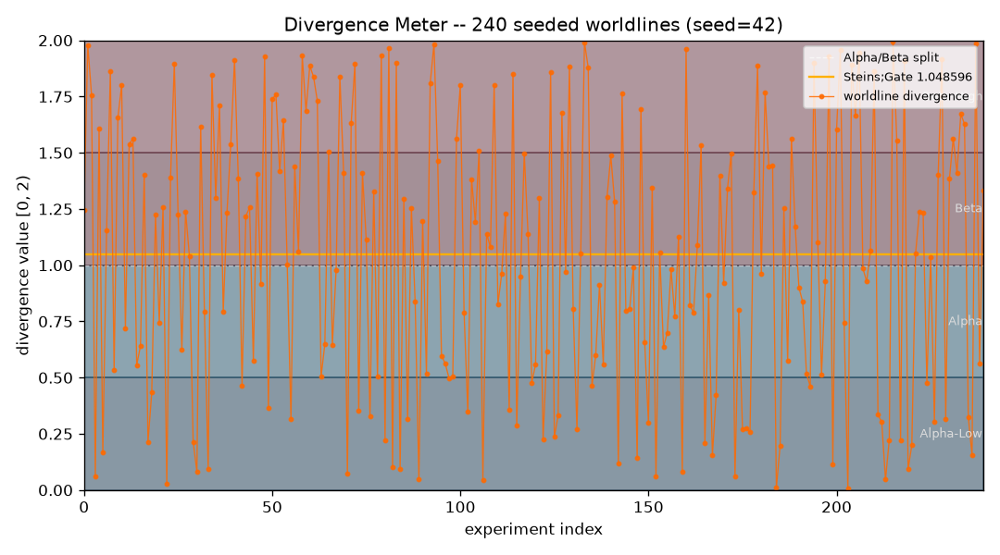

Steins;Gate Divergence Meter
A Steins;Gate worldline-divergence number, classified into an attractor field and rendered on a nixie-tube ASCII display — the hash is exact, never floating-point.

The idea
In Steins;Gate, the Divergence Meter is a nixie-tube counter that reads a worldline number — a value in [0, 2) — indicating which attractor field (timeline cluster) the current worldline belongs to. Small changes to the past nudge the reading; crossing a threshold means the story has jumped to a different attractor field. The show’s canonical “Steins;Gate” worldline is exactly 1.048596.
This package turns that fictional gauge into a real, reproducible function. Given any payload
string — a world-state description, a phrase, a file — it computes a divergence
number deterministically using SHA-256 hashing, with all arithmetic carried out as exact
fractions.Fraction values. The result is classified into an attractor field by
fixed thresholds and rendered on a 3×5 seven-segment nixie-tube ASCII display. The number
is a genuine mathematical object; only the “worldline” meaning attached to it is
make-believe.
Deterministic hashing, in plain terms
A cryptographic hash function like SHA-256 takes an input of any length and returns a fixed-size digest — here, 256 bits. Two properties make it useful for a “meter.” First, it is deterministic: the identical input always yields the identical digest, on any machine, forever. Second, it exhibits the avalanche effect: flipping a single character of the input scrambles roughly half the output bits, so the digest looks unrelated to the one before it. There is no smooth relationship between input and output — that unpredictability is exactly what a “divergence” reading wants.
To turn a 256-bit digest into a number in a tidy range, this project takes the first eight
bytes as a 64-bit integer word, then forms the exact rational
Fraction(word, 2^63). Because a 64-bit unsigned value ranges over
[0, 2^64) and the denominator is 2^63, the quotient lands in [0, 2) — the same interval
the show uses. Doing this with Fraction rather than a float means the value is
exact: no rounding, no platform-specific drift, and no risk of a reading landing on the wrong
side of an attractor-field boundary by a floating-point hair.
How this project demonstrates it
The pipeline is small and inspectable: hash the payload, slice 8 bytes, build an exact fraction in [0, 2), then bucket that number into one of four named attractor fields by simple range comparison. Classification is nothing more than “which interval does this value fall in,” which is why it is completely reproducible — run it a thousand times and the field never changes for a given input.
Two anchors make the behaviour easy to check. The canonical Steins;Gate reading 1.048596 is verified to sit within a tolerance of 5e-7, and the phrase “El Psy Congroo” is documented to produce a stable reading of 1.062031 from a fixed 64-bit word. Because the function is deterministic, these are not lucky samples — they are guarantees you can re-derive yourself. The nixie ASCII renderer then draws the digits with a physical-tube feel, using only text so there are no image or font dependencies.
The mathematics
word = SHA-256(payload)[:8] → 64-bit integer divergence = Fraction(word, 2^63) ∈ [0, 2) (exact, no floating point) Attractor fields: Alpha-Low [0, 0.5) — low-divergence alpha Alpha [0.5, 1.0) — alpha attractor Beta [1.0, 1.5) — beta attractor Beta-High [1.5, 2.0) — high-divergence beta Steins;Gate worldline: 1.048596 (within tolerance 5e-7 of 1.048596) Golden pair: "El Psy Congroo" → 1.062031 word = 9795511409617762124 Reading Steiner: atomic-write JSON store, frozen dataclasses
The ASCII nixie display renders each digit as a 3×5 seven-segment character with a physical nixie-tube feel. The display is purely text — no images, no dependencies.
_ _ _ _ _ _ |_| | ||_ |_||_ _| | | | _| |_||_ _| Worldline: 1.048596 [Steins;Gate attractor — MATCH]
Figures & animations
Worldlines — attractor field map
Sample payload strings mapped to their divergence numbers, coloured by attractor field. The Steins;Gate 1.048596 target is marked.
Divergence meter questions
Is the divergence number random or deterministic?
It is fully deterministic. The same input string always produces the same worldline number, because the value is derived from a SHA-256 hash of that string converted to an exact fraction. Nothing about the reading is random.
What is an attractor field in this project?
The worldline value in [0, 2) is bucketed by fixed thresholds into named fields — Alpha-Low, Alpha, Beta, and Beta-High. The classification is a simple range check on the number; the Steins;Gate worldline story framing around it is fictional.
Why use exact fractions instead of floating-point numbers?
Python’s fractions.Fraction keeps the hash-to-worldline conversion exact and
reproducible across machines. Floating-point rounding could shift a value across an
attractor-field boundary, so exact arithmetic guarantees the same classification everywhere.
Honest caveat: the “worldline” and “attractor field” meanings are pure fiction — there is no physics tying a hash digest to a timeline. What is real and useful here is the deterministic function: an exact, reproducible mapping from an arbitrary string to a number in [0, 2) and a stable bucket.
Run it
git clone https://github.com/caelum0x/awesome-mad-projects.git cd divergence-meter pip install -e . python -m divergence_meter "El Psy Congroo" # → Worldline: 1.062031 [Beta attractor] # Check the canonical Steins;Gate worldline python -m divergence_meter --check-steins-gate # Run tests python -m pytest tests/ -v